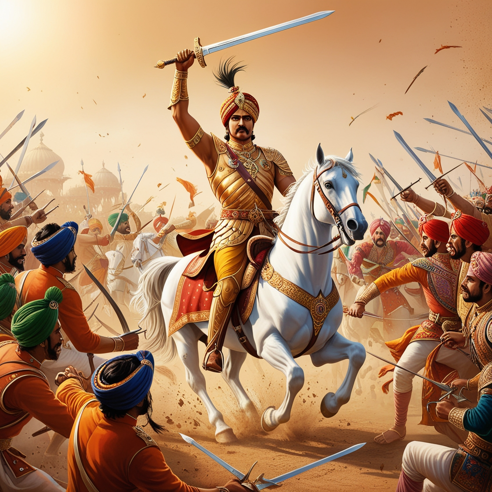

By the mid-17th century, the Mughal Empire, under the ambitious rule of Emperor Aurangzeb, sought to consolidate its control over the eastern regions of the Indian subcontinent. Assam, a region of immense strategic importance due to its location at the crossroads of trade routes and its abundant natural wealth, became a focal point of Mughal expansionist policies. The region was ruled by the Ahom dynasty, which had maintained its sovereignty since the 13th century, relying on strong governance, a cohesive military strategy, and an intricate irrigation system that supported a flourishing agrarian economy. The Mughal campaign to subjugate Assam faced significant resistance, culminating in a series of conflicts between the two powers. Among these, the Battle of Saraighat (1671) stands out as a defining moment, showcasing the resilience and strategic ingenuity of the Ahoms in the face of the formidable Mughal war machine. The Context of the Battle of Saraighat In the years leading up to the battle, the Mughals under Emperor Aurangzeb had attempted multiple incursions into Assam, seeing it as a critical gateway to control northeastern India and access lucrative trade routes connecting to Southeast Asia and Tibet. The Mughal governor of Bengal, Mir Jumla, led an earlier campaign in 1662-63, temporarily occupying parts of Assam. However, the harsh terrain, guerrilla tactics of the Ahoms, and logistical challenges forced the Mughals to retreat. This setback did not deter the empire, which renewed its efforts under the leadership of Raja Ram Singh I of Amber in 1671. Ahom Resistance and Leadership
